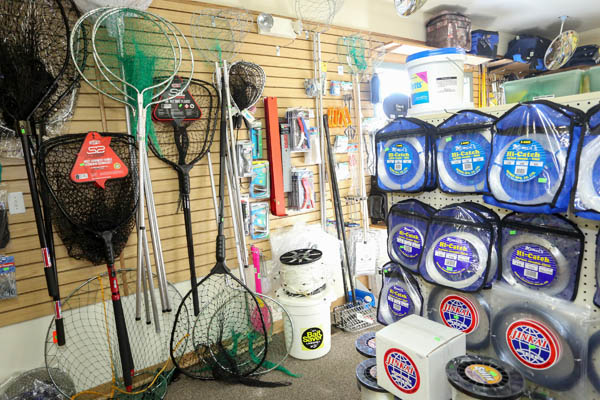

Robert Roysner
I am visionary and innovator. I have a strong sense of intuition, and the ability to coax ideas from people who have a difficult time finding the words for abstract concepts. I am able to ask provocative questions in a group brainstorming session to help others think conceptually and formulate inspirational touchstones for the company to believe in.
Once I have established my vision, my practical-thinking skills will allow me to help others transform vision into actionable items and deliverables. I help outline a specific strategy that narrows a business’s focus. I can also help companies organize projects into their component parts, and assign tasks based on broad ideas that have been customized for the client. I have the ability to listen carefully to the concerns the employees present to me and can react quickly and thoughtfully to help propose solutions.
I am able to carry out research and data collection to understand the organisation. Conduct analysis on the problems the client is having.I can interview the client's employees, management team and other stakeholders. I have the skills to run focus groups and facilitate workshops. I also prepare business proposals and presentations. I can identify issues and form hypotheses and solutions that I can present findings and recommendations to clients. I can implement recommendations or solutions and ensure the client receives the necessary assistance to carry it all out. I manage projects and programs within the company, and liaise with the client to keep them informed of progress and to make relevant decisions.
I have a bachelor’s degree in finance as well as an MBA. I have a great sense of self-motivation as well as self-discipline. I have organizational, analytical, and problem solving skills and have been in the finance field for over 7 years.
Experience
Barista
• Made coffee for customers
• Recruited and interviewed new employees
• Worked as Co-Manager
Small Business Owner
• Bought and resold boat parts to boat owners around the world
• Negotiated bargains for right sales price
Tutor
• Ran sessions to help students learn math, english, and science
• Reviewed and graded student essays as well as science projects
• Created How To videos for my students on the subjects I tutored
Education
Harvard University
Masters of Business Administration
MBA in International Business
University of California Riverside
University of California Riverside
Portfolio
